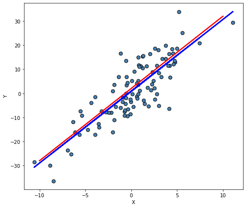
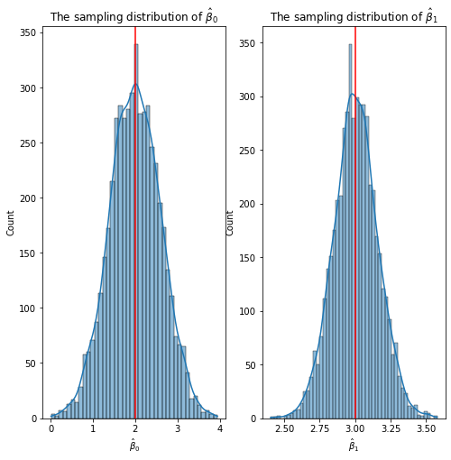

import numpy as np
from scipy import stats as stats
from matplotlib import pyplot as pltLab 01
The sampling distribution of OLS estimators
The sampling distribution of \(\hat{\beta}_0\) and \(\hat{\beta}_1\)
Generate \(100\) data points from the following model:
\[Y_i = 2 + (3 * X_i) + \epsilon_i \quad \forall i = 1,\ldots,100.\]
#generate x data
seed = 123 #did not assign
n = 100
x = stats.norm.rvs(loc = 0, scale = 4, size = n)
beta_0 = 2
beta_1 = 3
#generate y_mean
y_mean = beta_0 + beta_1*x
#generate epsilon
epsilon = stats.norm.rvs(loc = 0, scale = 6, size = n)
#generate y with error terms
y_data = y_mean + epsilonGet a scatter plot of the generated data, then plot the mean line (red) and the OLS regression line.
#initialize layout
fig, ax = plt.subplots(figsize = (8, 7))
#add scatterplot
ax.scatter(x, y_data, s=50, alpha=1, color="steelblue", edgecolors="k")
#fit linear regression via least squares with numpy.polyfit
#it returns slope (b) and an intercept (a)
# deg=1 means linear fit (i.e. polynomial of degree 1)
b, a = np.polyfit(x, y_data, deg=1)
#plot regression line
ax.plot(x, a + (b * x), color="blue", lw=2.5)
#fit a straight line passing through beta0 and beta1
xseq = np.linspace(-10, 10, num=n)
plt.plot(xseq, beta_0+(beta_1*xseq), color="red", lw=2.5)
plt.xlabel("X")
plt.ylabel("Y");
If you repeatedly, say 5000 times, generate the data from the same data generating mechanism (equation above), store the intercept and slope parameter estiamtes for each run, plot the histogram of intercept estimates and histogram of slope estimates, respectively, you will see that OLS estimates have a bell-shaped curve centered around the true value set in the data generating mechanism.
MC_run = 5000
#create any empty list
#generate MC_run times data sets
#for each data sets, fit a SLR and get beta1hat
beta0_coef = []
beta1_coef = []
for i in range(MC_run):
n = 100
beta_0 = 2
beta_1 = 3
#generate x
x = stats.norm.rvs(loc = 0, scale = 4, size = n)
#generate y
y_data = beta_0 + beta_1*x + stats.norm.rvs(loc = 0, scale = 6, size = n)
#calculate beta1_ols for each data set
beta1, beta0 = np.polyfit(x, y_data, deg=1)
beta0_coef.append(beta0)
beta1_coef.append(beta1) import seaborn as sns
fig, axes = plt.subplots(1, 2, sharex=False, figsize=(8, 8))
sns.histplot(ax=axes[0], x = beta0_coef, kde = True)
sns.histplot(ax=axes[1], x = beta1_coef, kde = True)
axes[0].set_xlabel(xlabel = r"$\hat{\beta}_0$")
axes[1].set_xlabel(xlabel = r"$\hat{\beta}_1$")
axes[0].set_title(r"The sampling distribution of $\hat{\beta}_0$")
axes[1].set_title(r"The sampling distribution of $\hat{\beta}_1$")
axes[0].axvline(x=2, color = 'red')
axes[1].axvline(x=3, color = 'red');
#plt.savefig('/Users/gulinan/Fall22_Courses/MAT555E/Week_02/images/sampling.png')
import session_info
session_info.show()Click to view session information
----- session_info 1.0.0 -----
Click to view modules imported as dependencies
anyio NA appnope 0.1.2 attr 21.2.0 babel 2.9.1 backcall 0.2.0 brotli 1.0.9 certifi 2021.05.30 chardet 4.0.0 charset_normalizer 2.0.0 colorama 0.4.4 cython_runtime NA dateutil 2.8.2 debugpy 1.4.1 decorator 5.1.0 entrypoints 0.3 google NA idna 3.1 ipykernel 6.4.1 ipython_genutils 0.2.0 jedi 0.18.0 jinja2 3.0.1 json5 NA jsonschema 3.2.0 jupyter_server 1.11.0 jupyterlab_server 2.8.1 markupsafe 2.0.1 mpl_toolkits NA nbclassic NA nbformat 5.1.3 numpy 1.21.2 packaging 21.3 parso 0.8.2 pexpect 4.8.0 pickleshare 0.7.5 pkg_resources NA prometheus_client NA prompt_toolkit 3.0.20 ptyprocess 0.7.0 pvectorc NA pydev_ipython NA pydevconsole NA pydevd 2.4.1 pydevd_concurrency_analyser NA pydevd_file_utils NA pydevd_plugins NA pydevd_tracing NA pygments 2.10.0 pyrsistent NA requests 2.26.0 send2trash NA six 1.16.0 sniffio 1.2.0 socks 1.7.1 storemagic NA terminado 0.12.1 tornado 6.1 traitlets 5.1.0 uritemplate 4.1.1 urllib3 1.26.7 wcwidth 0.2.5 websocket 0.57.0 zmq 22.3.0
----- IPython 7.27.0 jupyter_client 7.0.3 jupyter_core 4.8.1 jupyterlab 3.1.12 notebook 6.4.4 ----- Python 3.8.12 | packaged by conda-forge | (default, Sep 16 2021, 01:59:00) [Clang 11.1.0 ] macOS-10.15.7-x86_64-i386-64bit ----- Session information updated at 2022-09-25 20:36